FPFK KERICHO TOWN CHURCH
A place to experience life in abundance.
FPFK Kericho Town Church is part of the larger Free Pentecostal Fellowship in Kenya(FPFK), a vibrant evangelical denomination with rootes dating back to 1955. Officially started on 3rd January 2016, we have grown to become a beacon of spiritual light in the Kericho community, serving believers and reaching out to the lost with the message of Jesus Christ. Every great journey begins with a step of faith, and ours began with just a handful of people who believed that God was about to do something meaningful. On 3rd January 2016, we gathered for the first time at Quick Service Restaurant, carrying with us a simple but powerful desire — to worship God, grow together, and become a community where lives could be transformed by His love. At the time, we could not see how far the journey would take us. What began as a small gathering was filled with hope, prayer, and a deep trust in God. We knew that the road ahead would not always be easy, but we chose to move forward, believing that God would lead us every step of the way. As the church grew, so did our need for a place where we could worship and fellowship together. In 2017, we moved to Oryx, marking another important chapter in our story. It was a season of growth, learning, and building relationships. Through every change and every challenge, God continued to provide, reminding us that the strength of the church is not found only in its building, but in the people and the faith that bring them together. Then, in 2018, another significant chapter began. We settled at Duka Moja, the place we continue to call home today. What may have once seemed like a small beginning had grown into a community of believers united by faith, fellowship, service, and a desire to see God's work continue. Through the years, we have experienced seasons of joy and seasons that tested our faith. We have celebrated answered prayers, witnessed lives changed, welcomed new families, and walked alongside one another through difficult moments. Through it all, one thing has remained constant: God has been faithful. Looking back at where we began, we are reminded that God does not despise small beginnings. The handful of people who gathered at Quick Service Restaurant in 2016 could not have known what God had in store. Yet, step by step, He opened doors, provided opportunities, brought people together, and allowed the ministry to grow. Today, as we gather at Duka Moja, we do so with grateful hearts. We remember where we came from, we celebrate how far God has brought us, and we look forward with faith to where He is leading us next. What God started, He has continued to grow. And our story is still being written.
A strong pentecostal church meeting the needs of the society holistically based on christian values.
To preach the word of God to all nations in preparation for the second coming of the Lord Jesus Christ by reaching out and establishing churches which can meet the spriritual, economic and social needs of the people through evangelism, education, training and socio economic activities based on christian values.
FPFK is guided by six foundational values that shape our identities:
Address: Duka Moja, Kericho, Kenya. Phone: +25415598143 Email: fpfkkerichotownc@gmail.com
Matthew 19:14 [14]But Jesus said, “Let the little children come to Me, and do not forbid them; for of such is the kingdom of heaven.

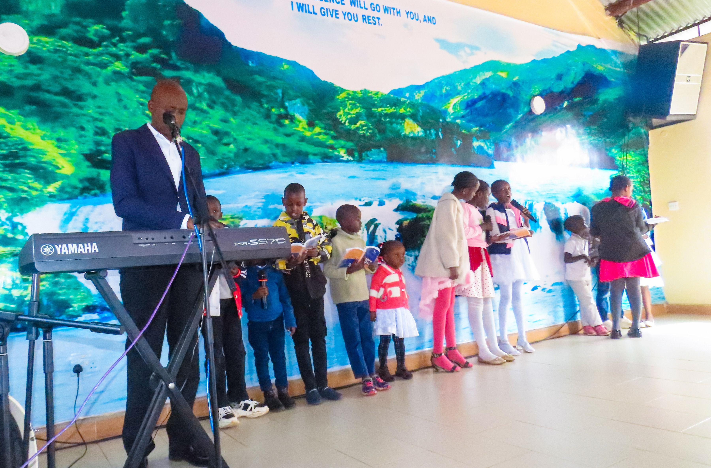

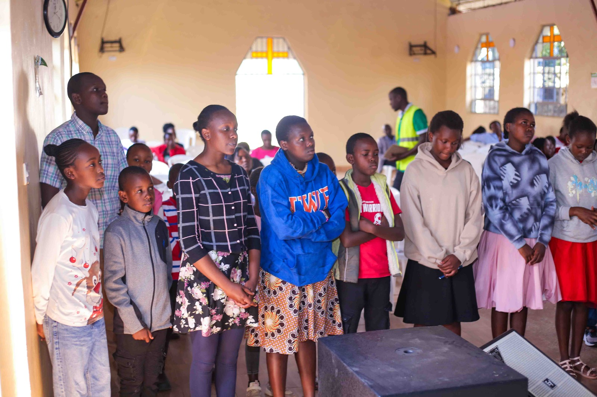
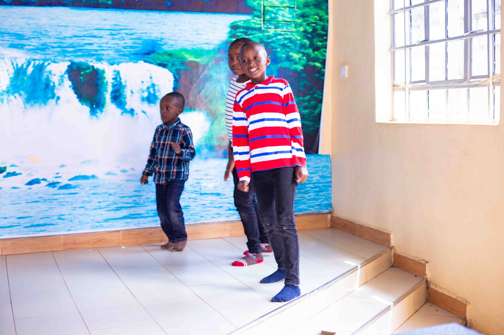
Psalms 119:9: How can a young man cleanse his way? By taking heed according to Your word.

Proverbs 31:25-29 [25]Strength and honor are her clothing; She shall rejoice in time to come.
Psalms 1:1-3 [1]Blessed is the man Who walks not in the counsel of the ungodly, Nor stands in the path of sinners, Nor sits in the seat of the scornful; [2]But his delight is in the law of the Lord, And in His law he meditates day and night. [3]He shall be like a tree Planted by the rivers of water, That brings forth its fruit in its season, Whose leaf also shall not wither; And whatever he does shall prosper.
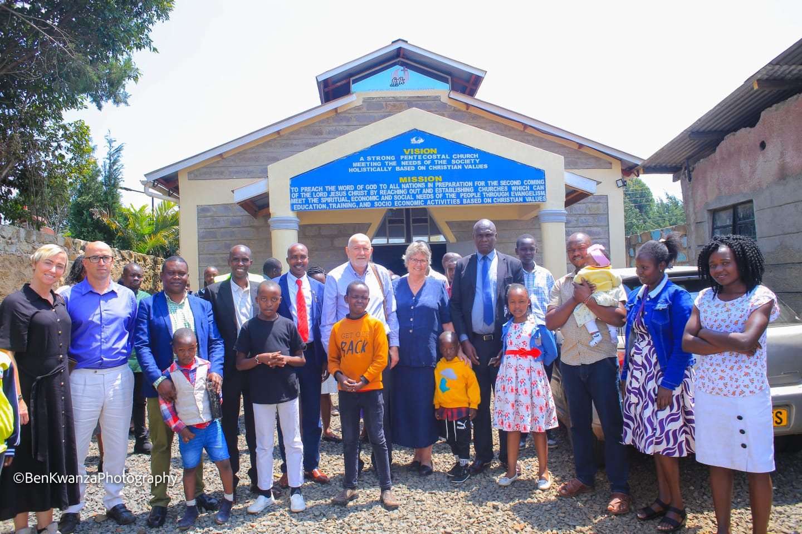


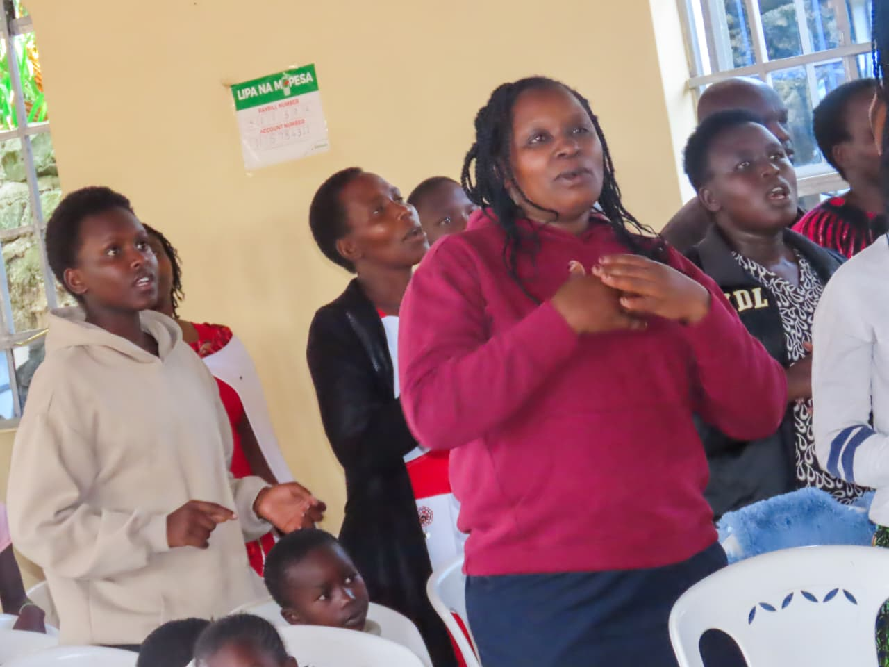
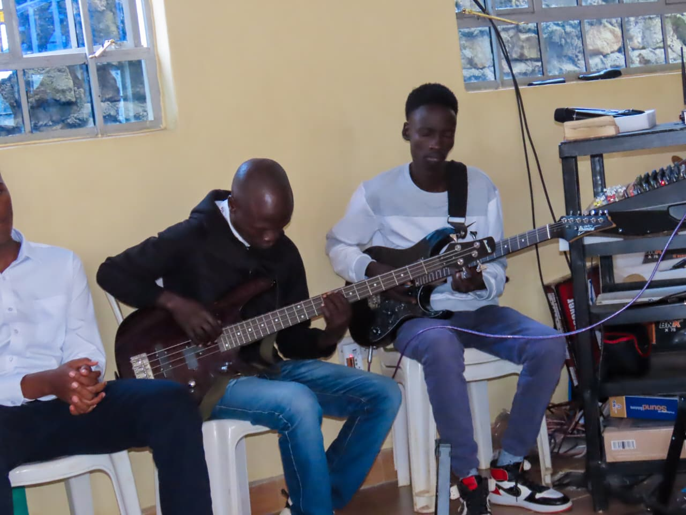
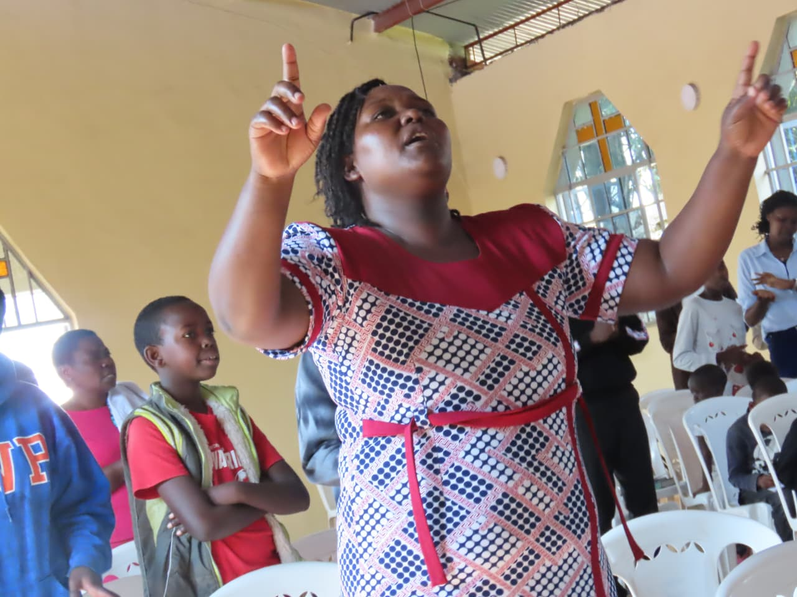
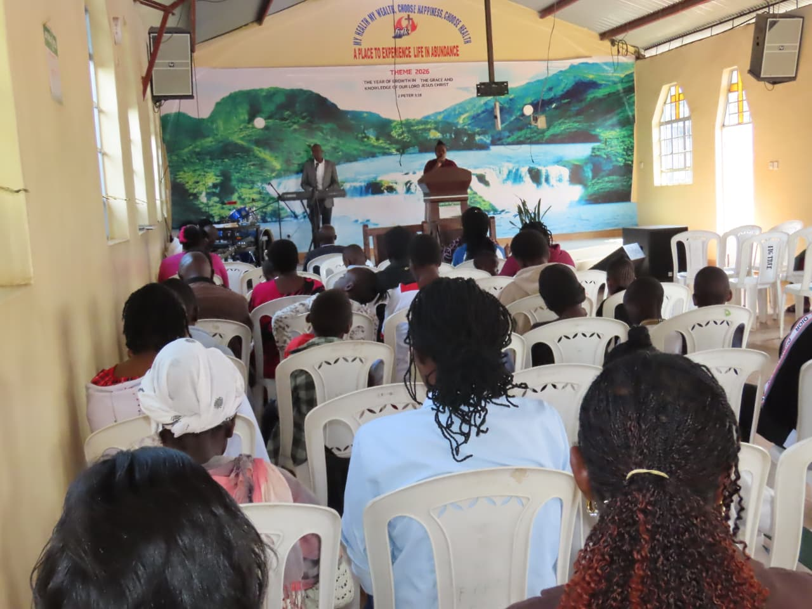
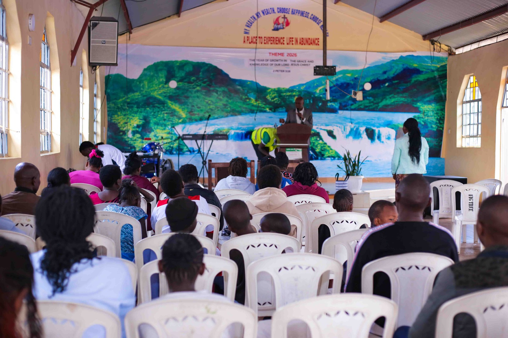
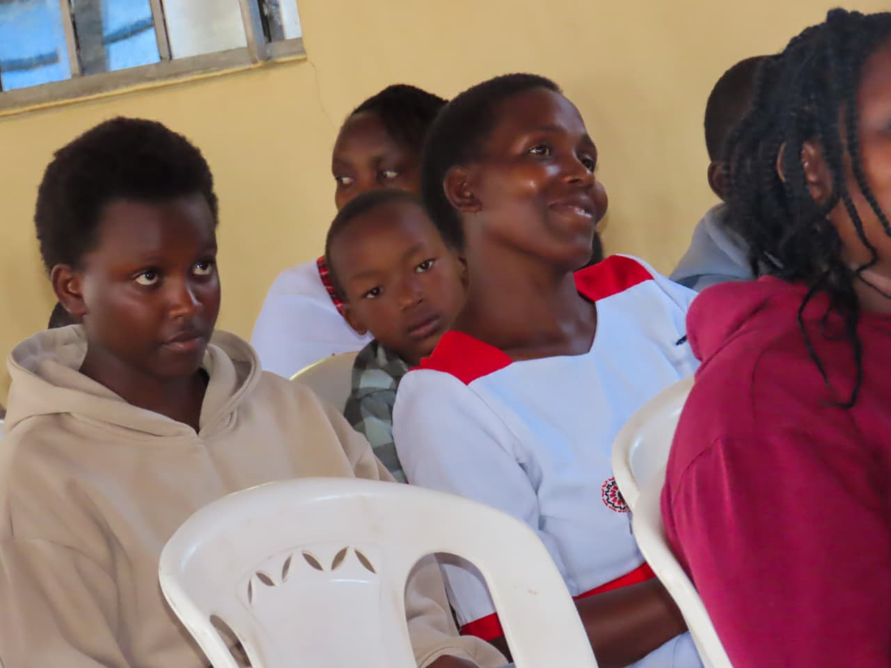
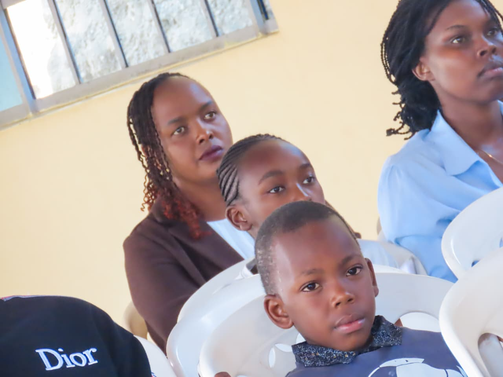
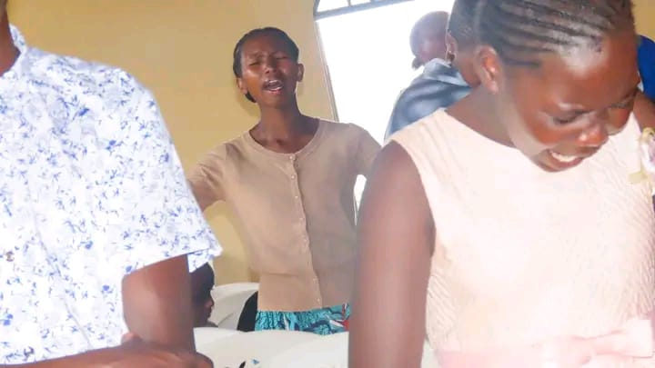

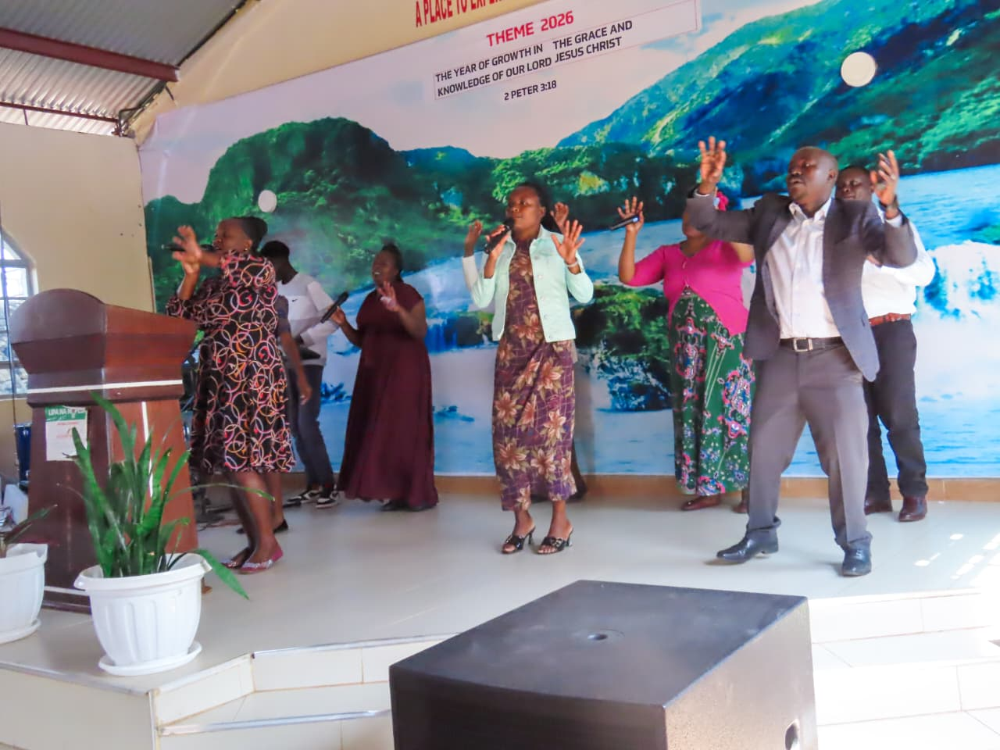
Mark 12:30-And the second, like it, is this: You shall love your neighbor as yourself. There is no other commandment greater than these.
Whether you're a member, a visitor, or part of our wider community, we want you to know that you are valued and loved. No matter what season of life you are facing, our pastoral care team is here to support and encourage you. We offer prayer support, individual and marriage counselling, hospital and home visits, and bereavement care. Whatever your need, you don't have to walk through it alone. Reach out to us—we would be honoured to journey alongside you.
Senior Pastor:Rev Gideon Yegon
Assistant Pastor: Pastor Leonard Ngeny